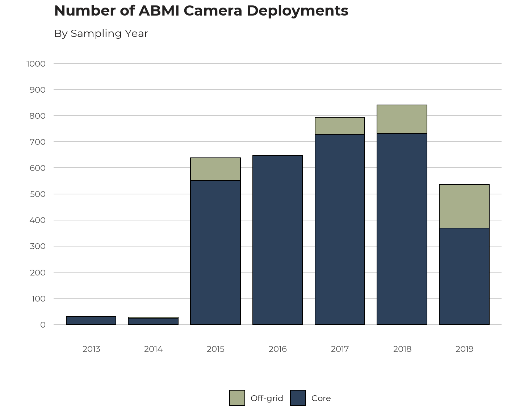
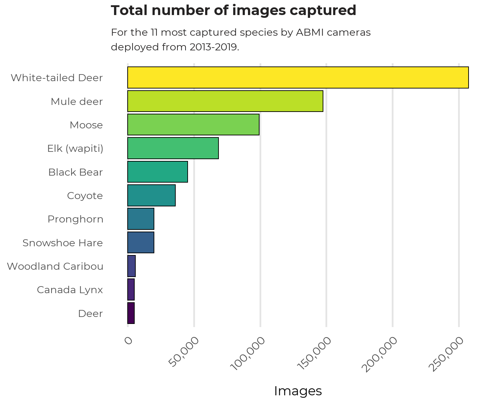

ABMI cameras have generated about 10 million images so far. Some of these are images taken at fixed time intervals to document the site conditions and verify that the camera was operating. The majority of the images are motion-triggered, and need to have their content identified. We use several automated processes to reduce the number of images that human taggers need to look at:
Neural network “auto-taggers” are trained to recognize images with no animals (“None” images) and images with domestic cows.
A two-stage subsampling procedure is used with series of 6 or more images separated by less than a two-minute cut-off: 5 randomly selected images are tagged by humans and used to fill in the rest of the series, unless a native mammal is detected in any of the 5 images, in which case all images in the series are tagged by people.
Additional auto-filling rules are used when a substantial number of images in a series are tagged by an auto-tagger, and for images that occur at the start or end of a deployment that are staff setting up cameras.
Cut-off scores for the auto-taggers, the subsampling approach and the other rules were all developed using data from millions of images and were set so that they are expected to miss <0.1% of images of native animals. With these procedures, approximately 15% of the total number of images are tagged by humans.
After all images have been tagged, we do a second species-by-species check of all identified native mammals to look for errors, including in difficult to separate species, such as marten and fisher, or white-tailed and mule deer (and we include categories for unknown deer or other groups).
Finally, we do another test of 5,000 randomly selected images from each of the different processes – auto-tagged None, auto-tagged Cows, filled-in subsampled series, human-tagged None, human-tagged cows, human-tagged native mammals – to assess final accuracy. The automated processes all miss <0.1% of native mammals. Human taggers have a somewhat higher error rate, generally for ambiguous images. These error rates are about 100+ times better than we find for surveys of birds or plants. Details of the tagging processes and the accuracy tests are available in separate documents.
Here we display the number of camera deployments that have been placed by the ABMI each year, categorized by core grid vs off grid.

We summarise the number of images captured by species between 2013 and 2019 for the 11 most common animals.

White-tailed and Mule deer account for a large percentage of images taken to-date by remote cameras, following by moose, elk, and black bear.